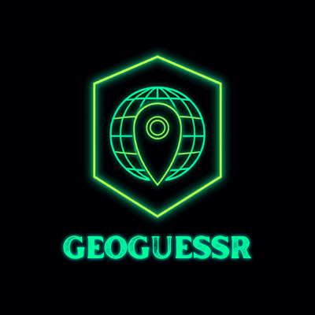
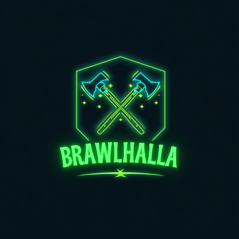
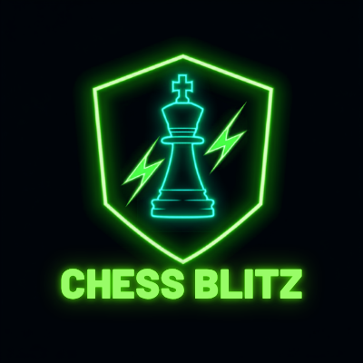
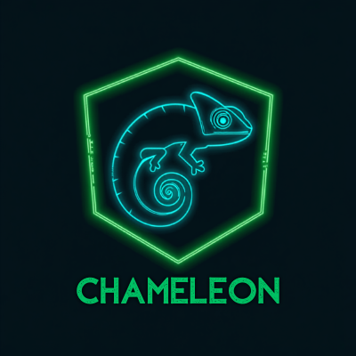
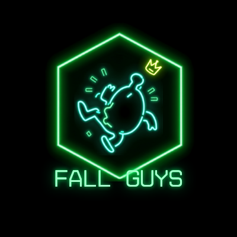

In drei Schritten zum Champion.
So einfach funktioniert ein Abend — der Rest sind nur Feinheiten.
Jedes Spiel
Platz 1 gibt 10 Punkte, dann 8 · 6 · 4 · 3 · 2 · 1. Niemand geht leer aus.
Der Abend
Alle Punkte zusammengezählt. Wer vorn liegt, gewinnt den Abend.
Die Saison
Dein Abendplatz gibt Saisonpunkte (25 · 18 · 15 · 12 · 10 · 8 · 6 · 4). Wer am Ende oben steht: Champion.
Wie wird gezählt.
Drei Tabellen, ein Prinzip: höherer Platz = mehr Punkte. Niemand geht leer aus, der Erste kassiert ordentlich.
Pro Spiel
Einzel-DisziplinenFall Guys
Team-Modus · pro ModusPro Abend
SaisonpunkteDie Disziplinen.
Pro Abend werden fünf Spiele aus dem Pool gespielt — welche, steht vor jedem Abend fest (siehe Spielabend-Seite). Der Pool wächst mit der Saison.

Haxball
Double EliminationTurnierbaum mit zweiter Chance: 2v2-Teams jede Runde neu gelost, zwei Niederlagen = raus. Am Ende 1v1-Grand-Final — der WB-Sieger startet 1:0.

GeoGuessr
Einzeln · No MoveGleicher Challenge-Link für alle, No Move. Höchste Punktzahl gewinnt.

Brawlhalla
Heats + PunkteLobbies à max. 4 Spieler, pro Runde neu ausgelost. Pro Lobby Platz 1–4 (4/3/2/1), über 2–3 Runden summiert.

Chess Blitz
Schweizer · 3+2Privates Chess.com-Schweizer-Turnier (3+2). Bei 4 Spielern = 3 Runden = jeder gegen jeden. Endplatzierung = Ranking.

Meccha Chameleon
Infectious 🦠Bemal dich, verschmilz mit der Map — wer gefunden wird, jagt mit. Start-Jäger per Los (ab 6 Spielern 2), jeder startet gleich oft. Punkte nach Fundreihenfolge; wer nie gefunden wird, kassiert Extrapunkte.

Fall Guys
Mini-Turnier2–3 Modi (solo oder Team), Punkte summiert — beste Gesamtleistung gewinnt.

Joker · Dino Runner
Per Veto tauschst du ein Spiel gegen Dino Runner — läuft den ganzen Abend am Handy.
Was den Bash besonders macht.
Drei Mechaniken sorgen dafür, dass es bis zum Schluss spannend und fair bleibt.
Streicher
Dein schlechtester Abend wird gestrichen. Mal keine Zeit? Der verpasste Abend ist automatisch dein Streicher — kein Drama.
Krone als Bürde
Wer als Führender in den Abend geht, kriegt dort nur ×0,8 Saisonpunkte. So bleibt's eng an der Spitze.
Veto & Joker
1× pro Abend ein Spiel rauswerfen — stattdessen zockst du Dino Runner 🦖, das nebenbei am Handy läuft. Höchster Score gewinnt die Disziplinpunkte (per Screen-Share/Foto). Der amtierende Tabellenführer hat kein Veto.
Das Kleingedruckte.
Die Feinregeln im Wortlaut — für den Zweifelsfall.
§ Das Kleingedruckte (für die Juristen 🤓)▼
Krone holen.
Eine Anmeldung gilt für alle Abende der Saison — jederzeit einsteigen. Kostenlos, kein Account nötig.